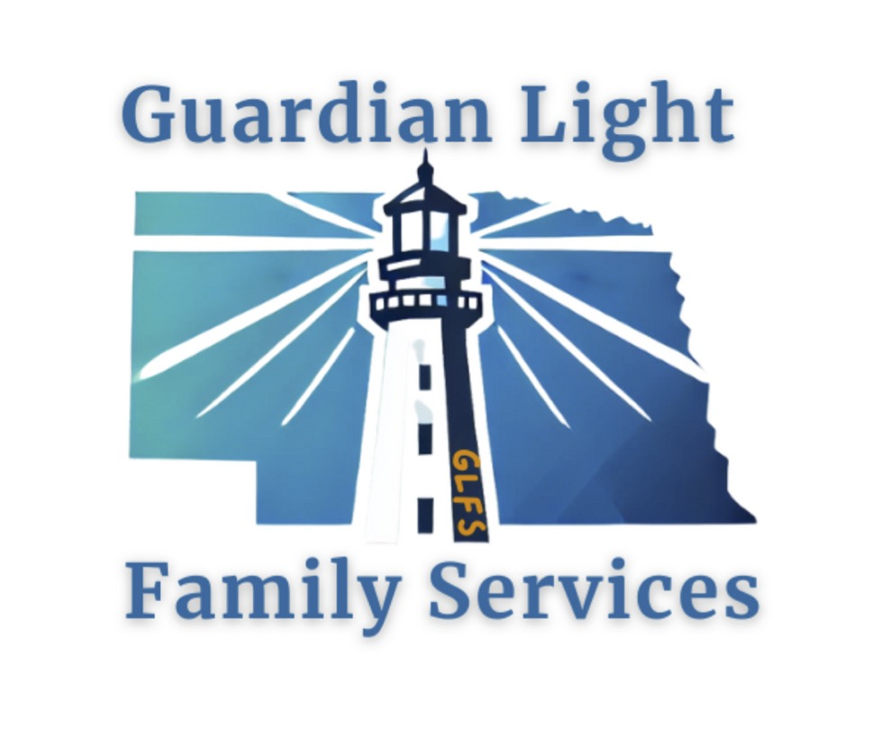
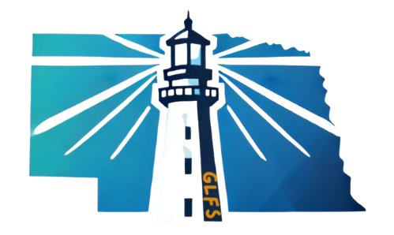

Family Support
Practical help for stronger families
In-home support, supervised visitation, parenting guidance, skill building, and coordinated services for families working toward stability.

Serving all 93 Nebraska counties
Guardian Light Family Services supports children, parents, foster families, and caregivers through statewide family services, foster care expertise, and hands-on family preservation.
Hover a location marker or service dot to see where Guardian Light teams and services are available.
Meet the work, people, and purpose behind Guardian Light Family Services across Nebraska.
Choose the area that fits your family, referral, or career interest. Each page gives a focused overview, what to expect, and how to take the next step.
In-home support, supervised visitation, parenting guidance, skill building, and coordinated services for families working toward stability.
Training, licensing support, placement guidance, and ongoing care for families opening their homes to children and youth.
Therapy-informed services, skill building, routines, and individualized plans that help families make lasting change at home.

By your side at every step
Guardian Light serves families from offices and visitation centers in North Platte, Omaha, Kearney, Scottsbluff, Sidney, and Lincoln, with teams available across Nebraska.